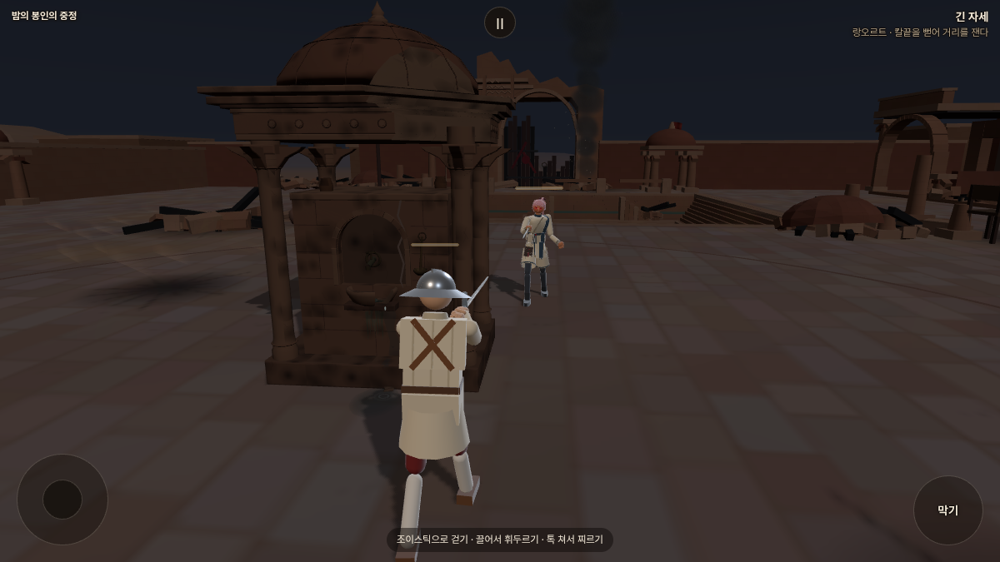
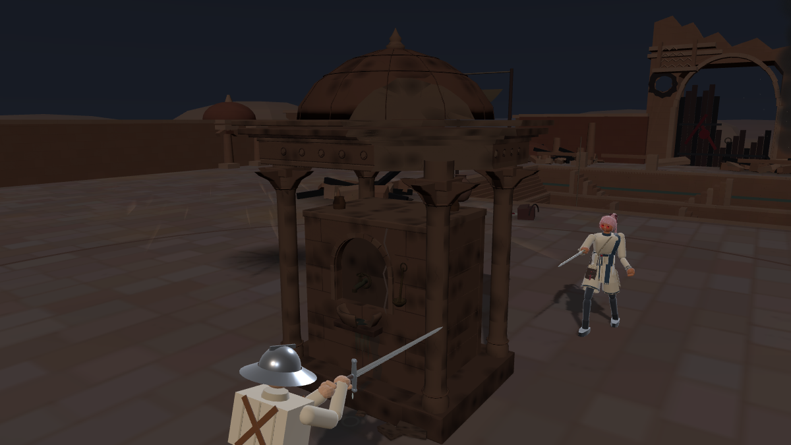
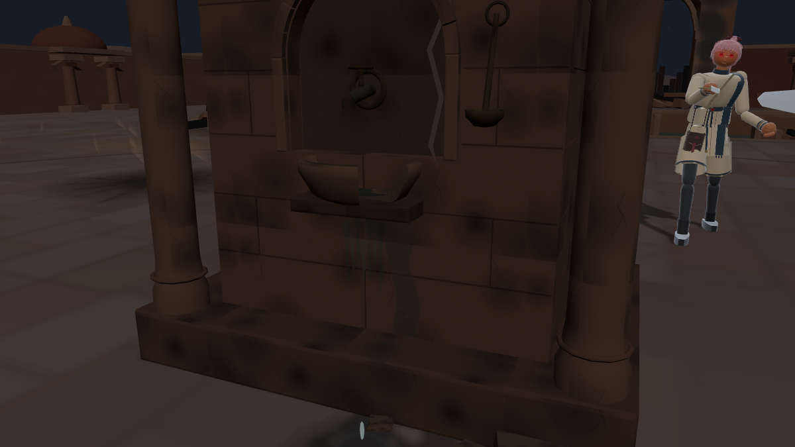
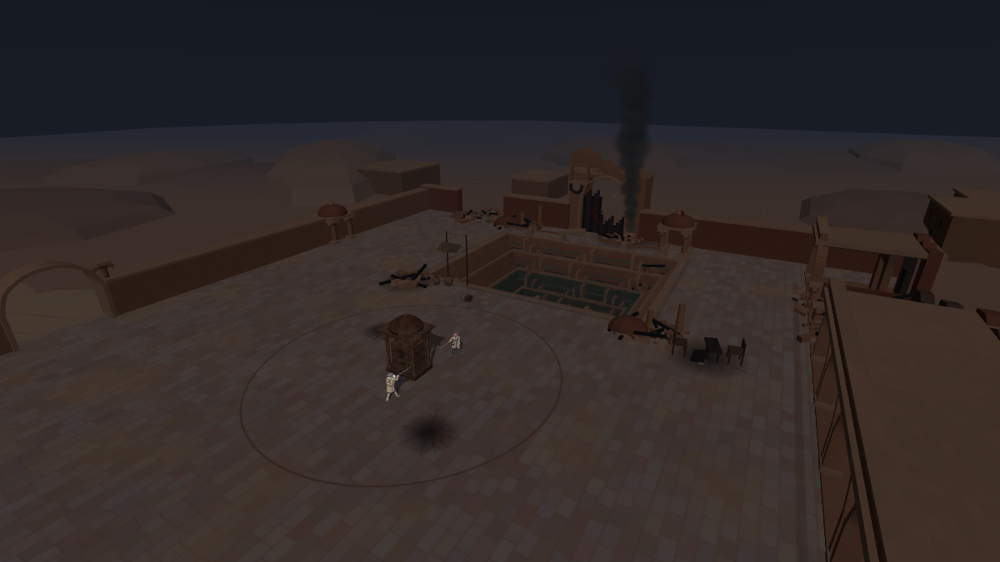
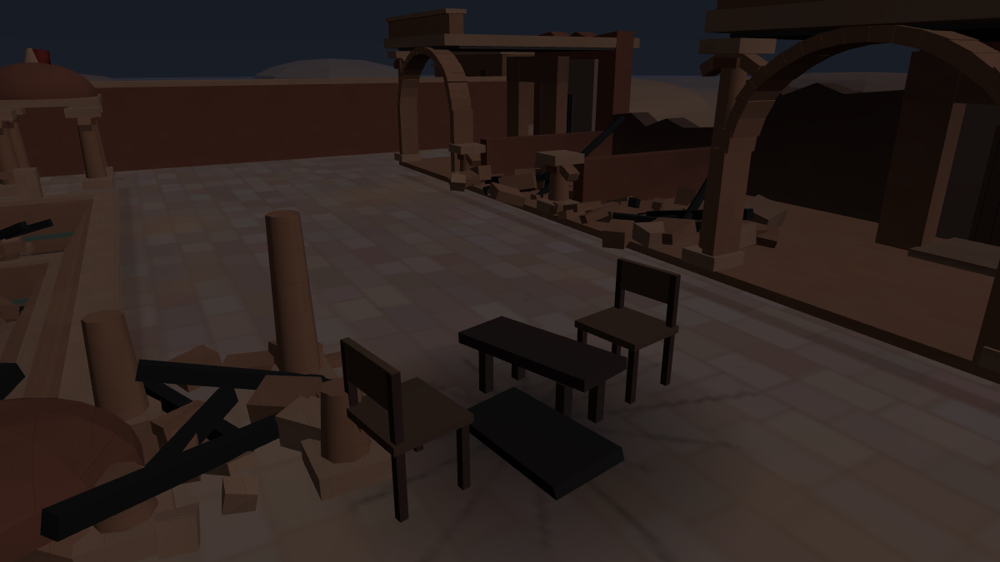
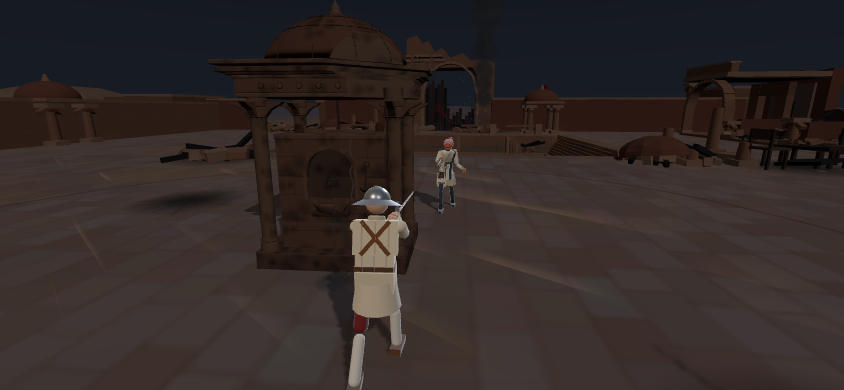

STILLNESS · 새벽 3시
밤의 봉인의 중정
평화를 위한 사절단의 비밀회담이 열렸던 곳.
제때 도착하지 못한 명령서는 오인 교전을 막지 못했고, 전쟁은 중정까지 집어삼켰습니다.

실제 전투 시점. 남은 급수정 너머로 무너진 문루와 검은 연기가 보입니다.
광기의 마야와 대련하기
포크의 검토용 시안입니다. 광기의 마야는 현재 설정인 세이버를 사용합니다. 이 대련은 기존 진행 기록에 저장되지 않습니다.
깨진 정수탑, 멎지 않는 물방울

지붕·처마 한쪽이 깨졌습니다. 몸을 가리는 본체는 남아 엄폐물로 사용할 수 있습니다.

출수구에서 떨어진 물이 깨진 물받이로 새어 나와 돌을 적십니다.실제 게임의 8초 누수 영상입니다. 물방울과 작은 파문을 확인하실 수 있습니다. 무음 촬영.포격이 지나간 자리

관찰 카메라로 본 전경. 계단우물과 라자스탄 사암 건축의 윤곽은 남고, 문루 상층과 회랑 일부가 사라졌습니다.
끝나지 못한 회담

마주 놓인 의자, 둘로 부서진 탁자, 남겨진 서류. 평화를 논의했던 자리의 흔적입니다.
휴대폰 전투 화면 보기

844×390 가로 화면에서 촬영했습니다.바람과 우물의 물방울, 남은 천과 고리 소리는 낮 중정의 환경음을 이어 사용합니다. 진행 중인 포격이나 폭발은 없습니다.